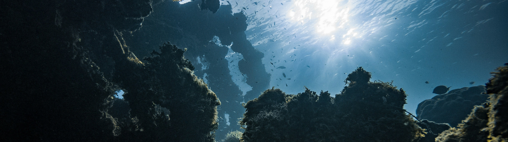
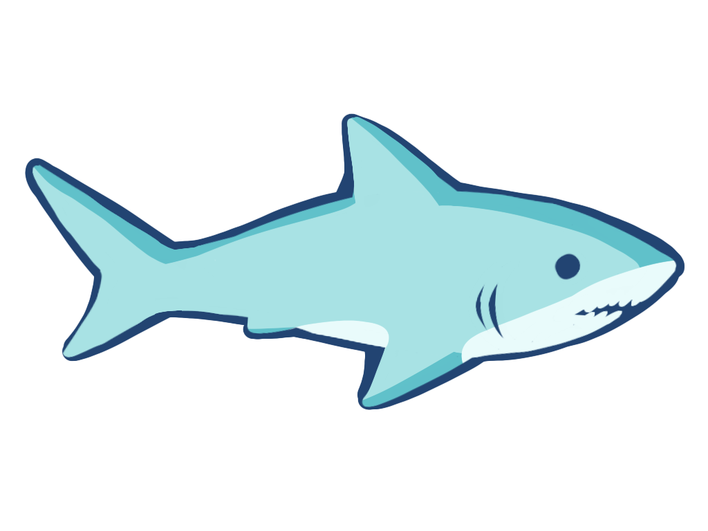
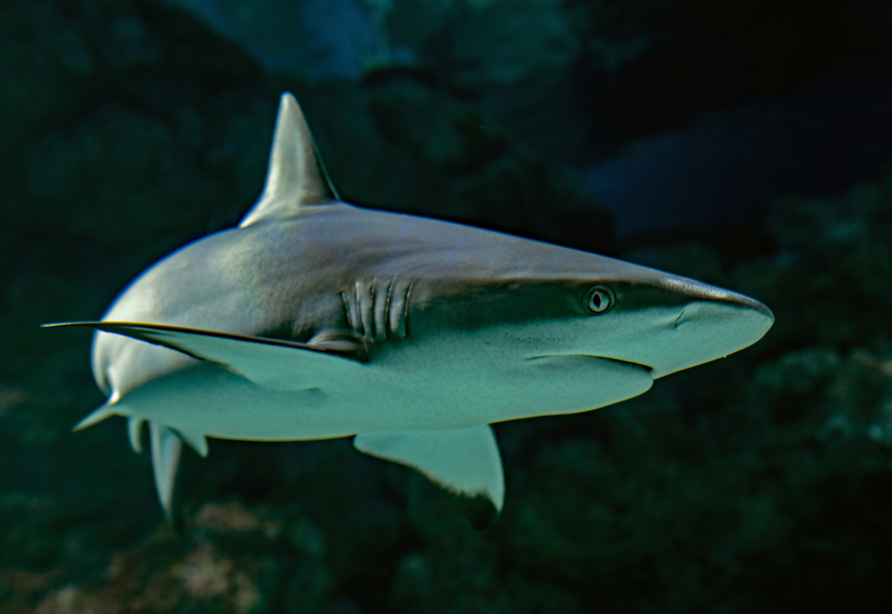
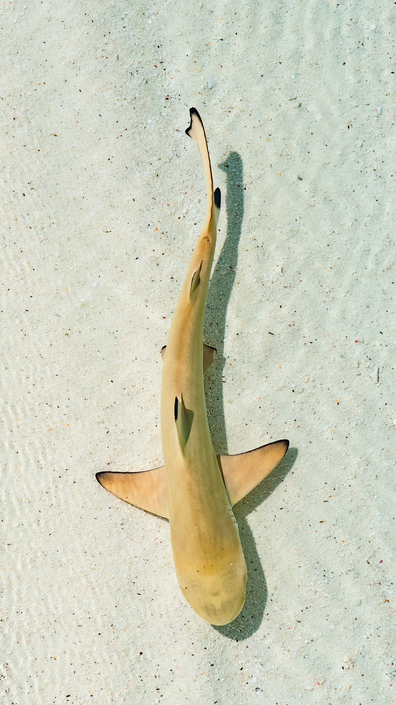

Sharks have a reputation that precedes them, one of being ruthless, bloodthirsty beasts. Incredible predators and a dangerous foe to human beings. While that might be true in some famous movies, the reality is far from that. Sharks are animals, just like any other creature you might encounter on this planet. That sounds like an obvious statement, but a surprising number of people don’t seem to realize just what that means. Sharks are not evil. They are not malicious, especially not the way Hollywood might depict them. They hunt to eat, and they eat to live—not to be vicious monsters. However, this does not mean that they are harmless. As all wild animals are, they are unpredictable and should be treated with respect.
There are more than 500 species of sharks in the world, and they range from a mere 8 inches in length (the dwarf lanternshark) to over 30 feet long (the whale shark, which is also the largest known fish species). Some sharks lay eggs (such as hornsharks), while others (like lemon sharks), perhaps surprisingly, give live birth to their young. Shark eggs are widely varied and uniquely shaped, too. Some eggs are shaped with tendrils to hook onto structures on the sea floor, which makes them less likely to be carried away. There is one species of shark (the Port Jackson shark) that lays eggs that are shaped like corkscrews. On a related note, baby sharks are called pups (just like dogs)! The last shark fact I will leave this off on is that there has been no great white shark that has ever been successfully kept in long-term captivity.This text was written by me for this assignment. All images are free stock photos from Unsplash. No AI was used to make this webpage.